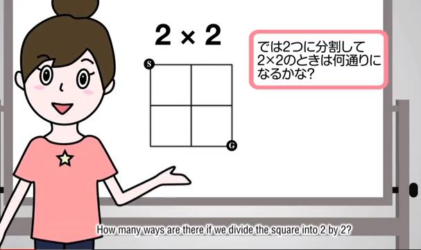
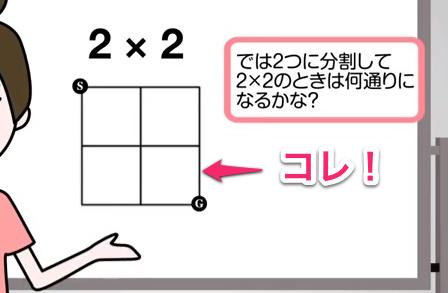
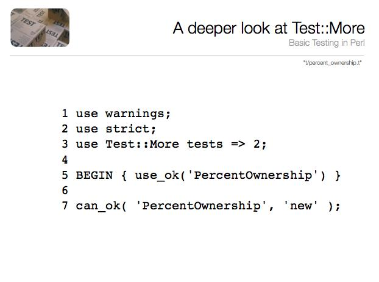
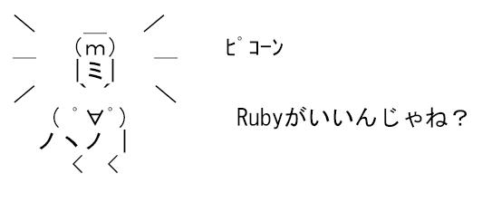
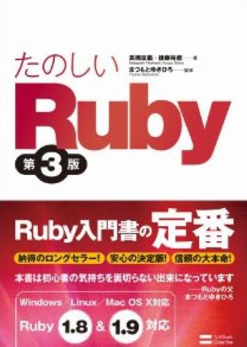

@kazuph
2012/12/01
挑戦的な数学/コンピュータのプログラミング問題集で、これを解くためには数学的な洞察力以上のものが要求される。 数学によって、エレガントで効果的な方法にたどり着くことができるが、ほとんどの問題はコンピュータとプログラミングの能力が必要とされる。
出展：ProjectEuler本家サイト

出展：『フカシギの数え方』 おねえさんといっしょ！ みんなで数えてみよう！

増殖している感じの画像


